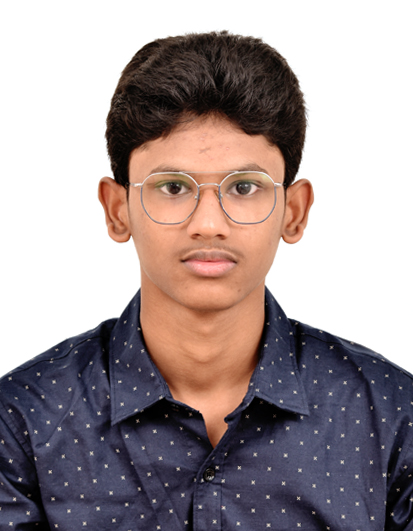

Farooq Ahmed

Summary
Im a dedicated person like to learn coding.
Education
School life
-
School : The Hindu Senior Secondary School
83, Big street, triplicane, chennai - 5
Year of study : 2009 - 2019
-
School : Sree Venkateshwarar Matric Hr Sec School
Royapettah, chennai - 14
Year of study : 2019 - 2023
College life
- Bachelor of Computer Application - Vels University (2023 - present)
Skills
Other